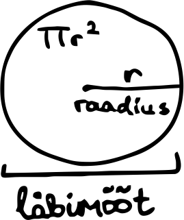
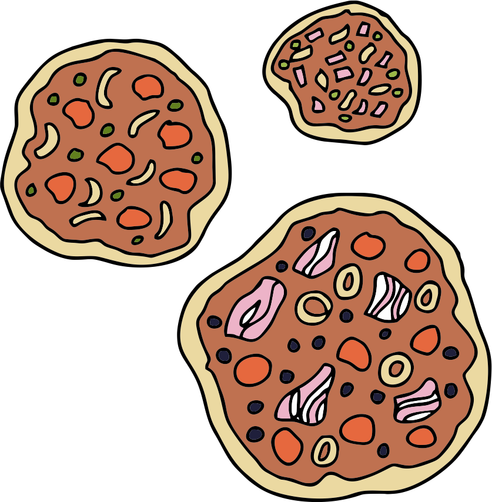

Kui meil on vaja sooritada mõni suurem ülesanne, siis on lihtsam see jagada alamülesanneteks. Esiteks on meil nii
parem ülevaade kõigest, mida on vaja teha ülesande sooritamiseks. Teiseks saame võib-olla mõne alamülesande kellelegi teisele teha anda.
Koolis on tihti vaja teha erinevaid rühmatöid. Näiteks kui neljases grupis on vaja teha esitlus põdra kohta, siis esimene õpilane võiks
otsida infot põdra elukohtade kohta, teine välimuse, kolmas toitumise ja neljas eluviisi kohta. Nii saavad kõik töötada oma alamülesannete
kallal ja lõpuks saame kokku tervikliku pildi põdrast.
Ka programme kirjutades on hea jagada suur programm väikesteks alamprogrammideks. Esiteks saab siis alamprogrammide
kirjutamise jagada erinevate inimeste vahel, aga teine eelis on see, et saame olemasolevad väikseid alamprogramme korduvalt mitmes kohas kasutada.
Oletame näiteks, et tahame kirjutada programmi pitsarestoranile. Pitsarestoran valmistab ette uut menüüd ja nad hakkavad pakkuma pitsasid kolmes suuruses:
20 cm, 28 cm ja 38 cm läbimõõduga. Nad teavad, et ühe ruutsentimeetri pitsa jaoks on neil vaja 2,3 grammi tainast ning nüüd tahavad nad iga pitsasuuruse
jaoks vajamineva taigna koguse arvutada. Väga mugav oleks, kui saaks vajamineva taigna koguse arvutamise valemi panna kirja ühes kohas ning siis
iga kord, kui on vaja seda valemit kasutada, viidata sellele koodijupile. Just siin tulevad appi funktsioonid, mille
abil saame alamprogrammi kirjutada ühes kohas, anda sellele nime ja seda hiljem mujal koodis kasutada.
Sisseehitatud funktsioonid
Tegelikult oleme me funktsioone juba kasutanud, seni oleme neid aga nimetanud lihtsalt käskudeks. Näiteks print(),
input(), type(), int(), str(),
float(), bool() on kõik funktsioonid. Need on mõned Pythoni sisseehitatud funktsioonidest.
Me ei tea täpselt, milline on see kood, mille abil funktsioon print() etteantud väärtuse ekraanile väljastab, aga meil ei
olegi vaja teada. Meile piisab teadmisest, et selline funktsioon on olemas ja saame seda kasutada.
Funktsioonidele saab sulgudes ette anda argumente
ehk teisisõnu parameetreid, mida funktsioonid oma töös kasutada saavad. Näiteks print() funktsioonile
võime anda argumendiks mingi sõne, arvu või tõeväärtuse, mis siis ekraanile väljastatakse. Funktsioonile int() anname argumendiks
näiteks sõne või ujukomaarvu, mille tahame täisarvuks teisendada.
Järgmiseks vaatame juba, kuidas ise funktsioone kirja panna.
Kuidas funktsiooni kirjutada?
Funktsiooni kirjutamine algab võtmesõnast def. Sellele järgneb funktsiooni nimi. Funktsioonide
nimetamisele kehtivad samad reeglid nagu muutujatele. Üldiselt on hea tava panna funktsioonile mingi tähendusrikas nimi, mis annaks teada, mida see funktsioon teeb.
Funktsiooni nime lõpus peavad alati olema sulud ja kõige lõpus koolon. Järgmistele ridadele kirjutatakse taandega kõik käsud, mida funktsioonis tehakse. Näiteks kirjutame
funktsiooni nimega tervita, mis tervitab kasutajat ja küsib, kuidas tal läheb.
Võid proovida seda koodijuppi käivitada, aga ilmselt märkad, et midagi ekraanile ei ilmu. Nimelt lihtsalt funktsiooni kirja panemisest
ehk kirjeldamisest ei piisa, seda funktsiooni tuleb kuskil koodis ka kasutada ehk funktsiooni tuleb välja kutsuda. Selleks tuleb kirjutada
programmi funktsiooni nimi koos sulgudega.
Nüüd ilmub tervitus ka ekraanile. Programme kirjutades on tavaks panna kõik funktsioonide kirjeldused programmi algusesse, olenemata sellest, kus
neid hiljem kasutatakse. Funktsioonidele järgnevat osa nimetatakse põhiprogrammiks ja just seda hakatakse täitma
programmi käivitamisel. Seni olemegi ainult põhiprogrammist koosnevat koodi kirjutanud. Programmi aluses olevad funktsioonide kirjeldused õpetavad Pythonile, kuidas
ta peab käituma, kui põhiprogrammis mõnda nendest funktsioonidest kasutatakse.
Kuidas funktsioonile argumente anda?
Proovime nüüd kirjutada funktsiooni, mis arvutaks pitsataigna koguse pitsa läbimõõdu põhjal. Alustame olukorrast, kus pitsa
diameeter on 20 cm ja ühe ruutsentimeetri pitsa jaoks on vaja 2,3 grammi tainast. Selleks peame kõigepealt arvutama pitsa pindala. Pitsa on
ringi kujuline, seega saame kasutada ringi pindala valemit: πr² (pi korda raadius ruudus) ja siis korrutada pindala 2,3-ga. Raadiuse saamiseks
jagame diameetri kahega. Pi asemel kasutame siin lihtsuse mõttes arvu 3,14.

def pitsatainas(): pindala = (20 / 2)**2 * 3.14 taigna_kogus = pindala * 2.3 print("20 cm läbimõõduga pitsa jaoks kulub " +
str(taigna_kogus) + " g tainast.")
pitsatainas()
See koodijupp väljastab meile:
20 cm läbimõõduga pitsa jaoks kulub 722.1999999999999 g tainast.
Nüüd tahaksime taignakoguse arvutada ka 28 ja 38 cm läbimõõduga pitsade jaoks. Kuid kuidas seda teha? Tahaksime muuta
oma funktsiooni pitsa läbimõõdust sõltuvaks. Siin tulevadki appi funktsiooni argumendid. Funktsioonile argumendi andmiseks tuleb funktsiooni kirjelduses
funktsiooni nime järel sulgudesse anda argumendi nimi. Kui tahame anda mitu argumenti, siis lisame need komadega eraldatud sulgudesse. Argumendi nimetamisel on samad reeglid nagu muutujate ja funktsioonide nimetamisel. Igal pool funktsioonis,
kus tahame argumenti kasutada, paneme konkreetse väärtuse asemel kirja argumendi nime. Täpselt nii nagu kasutaks muutujat. Järgmises koodijupis anname
funktsioonile ühe argumendi nimega läbimõõt. Funktsiooni sisus asendame arvu 20 nüüd argumendiga.
def pitsatainas(läbimõõt): pindala = (läbimõõt / 2)**2 * 3.14 taigna_kogus = pindala * 2.3 print(str(läbimõõt) +
" cm läbimõõduga pitsa jaoks kulub " +
str(taigna_kogus) + " g tainast.")
Põhiprogrammis, kus funktsiooni välja kutsume, peame nüüd andma funktsioonile argumendiks konkreetse väärtuse. Täpselt nii, nagu
oleme seni andnud argumente sisseehitatud funktsioonidele nagu print ja input.
pitsatainas(20)
Pealtnäha väljastab programm sama asja, mis enne, kuid nüüd saame soovi korral funktsiooni välja kutsuda ka teistsuguste
argumentidega:
def pitsatainas(läbimõõt): pindala = (läbimõõt / 2)**2 * 3.14 taigna_kogus = pindala * 2.3 print(str(läbimõõt) +
" cm läbimõõduga pitsa jaoks kulub " +
str(taigna_kogus) + " g tainast.")
pitsatainas(20) pitsatainas(28) pitsatainas(38)
See koodijupp väljastab meile nüüd kõigi kolme läbimõõduga pitsa jaoks vajalikud taignakogused:
20 cm läbimõõduga pitsa jaoks kulub 722.1999999999999 g tainast. 28 cm läbimõõduga pitsa jaoks kulub 1415.512 g tainast. 38 cm läbimõõduga pitsa jaoks kulub 2607.142 g tainast.
Nüüd võiks teha veel ühe viimase väikse täienduse meie koodi. Kindlasti märkasid, et 20 cm läbimõõduga pitsa
puhul väljastatakse meile hirmus palju komakohti. Tegelikult meil ju nii täpset vastust vaja ei lähe, piisaks ka ühest või kahest komakohast.
Selleks, et vastus ümardada soovitud komakohtadeni, õpime ära uue sisseehitatud funktsiooni nimega round. Sellele
funktsioonile saab anda kaks argumenti. Esimene argument on see arv, mida tahama ümardada, ja teine argument on soovitud komakohtade arv. Kui tahaksime
arvu 722.1999999999999 ümardada ühe komakohani, siis saaksime seda teha nii:
round(722.1999999999999, 1)
See annaks meile tulemuseks 722.2. Proovime nüüd ka oma funktsiooni täiendada, et see ümardaks
tulemuse ühe komakohani:
def pitsatainas(läbimõõt): pindala = (läbimõõt / 2)**2 * 3.14 taigna_kogus = round(pindala * 2.3, 1) print(str(läbimõõt) +
" cm läbimõõduga pitsa jaoks kulub " +
str(taigna_kogus) + " g tainast.")
Kuidas funktsioonist väärtust tagastada?
Mis saaks aga siis kui tahaksime nüüd taignakogused kokku liita, et leida palju tainast peab kokku tegema? Esimene mõte võib olla, et
äkki saame kasutada funktsiooni seest muutujat taigna_kogus? Võime seda kohe proovida:
def pitsatainas(läbimõõt): pindala = (läbimõõt / 2)**2 * 3.14 taigna_kogus = round(pindala * 2.3, 1) print(str(läbimõõt) +
" cm läbimõõduga pitsa jaoks kulub " +
str(taigna_kogus) + " g tainast.")
pitsatainas(20) print(taigna_kogus)
Kui seda koodi käivitada, siis näeme, et saame hoopis veateate:
NameError: name 'taigna_kogus' is not defined
See veateade ütleb meile, et muutujat nimega taigna_kogus ei ole olemas. Aga ometi me
ju näeme, et funktsiooni sees on selline muutuja? Tegelikult tulebki välja, et kõik funktsiooni sees loodud muutujad ongi kättesaadavad ainult selle
sama funktsiooni seest. Väljastpoolt me nendele ligi ei pääse. Seega ei saa me otse funktsiooni seest mingit muutujat kasutada. Kuidas siis aga
taigna koguse arvutamise tulemus kätte saada?
Selleks, et funktsioonist mingi väärtus kätte saada, tuleb see funktsioonis tagastada.
Kui funktsioonist väärtus tagastatakse, siis see funktsioon omandab selle väärtuse oma töö lõpus ja saame seda väärtust oma koodis kasutada. Näiteks
input-funktsioon tagastab selle sõne, mis kasutaja sisestas. Funktsioon int() tagastab
teisenduse tulemusel saadud täisarvu. Kui ise funktsioone kirjeldame, siis peame funktsioonis ära märkima selle väärtuse, mida funktsioon peab tagastama.
Selleks kirjutame vastava väärtuse ette võtmesõna return. Kohe kui funktsioonis jõutakse return
võtmesõnani, siis tagastatakse väärtus ja funktsioon lõpetab oma töö.
Proovime nüüd funktsioonis taigna koguse väljastamise asemel selle hoopis tagastada:
Nüüd küll pitsataigna kogus tagastatakse, aga hetkel ei näe me veel midagi programmi väljundis, sest meie koodis pole ühtegi
print-funktsiooni. Võime näiteks väljastada funktsiooni väljakutse tulemuse,
siis näeme, kas funktsioon
tagastas ilusti õige arvu:
print(pitsatainas(20))
Nüüd ilmub meil ekraanile arv 722.2, mis on õige tulemus. Nagu näeme, saame funktsiooni
tagastatud väärtust oma koodis edasi kasutada, võime selle näiteks välja printida, salvestada mõnda muutujasse või teha sellega muid vajalikke tehteid.
Täiendame oma programmi nüüd nii, et laseme funktsioonil arvutada kõigi kolme pitsasuuruse jaoks vajalikud taignakogused, salvestame funktsiooni
tagastatud väärtused muutujatesse ning hiljem liidame need kokku, et anda kasutajale teada, palju tal kolme eri suuruses pitsa jaoks tainast kokku läheb.
kogus_20 = pitsatainas(20) kogus_28 = pitsatainas(28) kogus_38 = pitsatainas(38) kokku = kogus_20 + kogus_28 + kogus_38 print("Kokku kulub 20 cm, 28 cm ja 38 cm pitsa peale " +
str(kokku) + " g tainast.")

Tagastusväärtus None
Kõik funktsioonid tagastavad midagi, isegi kui me ei määra return võtmesõnaga
tagastatavat väärtust. Nendel funktsioonidel, millel pole tagastatavat väärtust määratud, on vaikimisi tagastatavaks väärtuseks
None. See on täiesti omaette andmetüüp ja see tähistab puuduvat väärtust. Võid katsetada järgmise funktsiooniga:
def liida(a, b): print(a + b)
print(liida(4, 3))
See funktsioon väljastab kõigepealt numbri 7, sest funktsiooni sees prinditakse liitmistehte tulemus. Seejärel, kui funktsioon lõpetab,
siis väljastatakse ka funktsiooni enda väärtus, mis antud juhul on None.
7 None
None tagastustüübiga me tegelikult väga palju mõistliku teha ei saa. Sellel puuduvad igasugused
operatsioonid teiste andmetüüpidega ja kui prooviksime sellele näiteks mõnda arvu või sõnet liita, saaksime veateate.
Harjutused
Pitsarestoran
Ühes eelnevas näites arvutasime kokku pitsataignakoguse ühe 20 cm, ühe 28 cm ja ühe 38 cm läbimõõduga pitsa jaoks. Nüüd tee oma programm
pitsarestoranile veelgi kasulikumaks ja küsi hoopis kasutajalt, mitu igas suuruses pitsat ta plaanib täna teha. Siis saad kokku arvutada, palju tainast peaks
pitsarestoran hommikul valmistama, et nad saaks terve päeva sellest pitsasid teha. Täienda funktsiooni nii, et see võtaks ka teise argumendi - pitsade koguse.
Lisaks võiks teisendada lõpliku koguse grammidest kilogrammidesse, sest nii on see kogus paremini loetav. Tulemus võiks ka olla ümardatud ühe komakohani.
Väljund võiks olla näiteks selline:
Mitu 20 cm läbimõõduga pitsat plaanid teha? 23 Mitu 28 cm läbimõõduga pitsat plaanid teha? 45 Mitu 38 cm läbimõõduga pitsat plaanid teha? 31 Kokku kulub täna pitsadele 161.1 kg tainast.
Edasiarendus: rohkem funktsioone
Võib-olla märkasid eelmise ülesande lõpus, et sinna jäi ikka omajagu korduvat sarnast koodi sisse. Näiteks kuidas kasutajalt küsiti
iga pitsasuuruse jaoks mitu sellist ta plaanib teha? Nüüd proovi luua paar uut funktsiooni, mis vähendaksid põhiprogrammis tehtava töö hulka.
Esimene lisatav
funktsioon võiks võtta argumendiks pitsa läbimõõdu, küsida kasutajalt mitu sellise läbimõõduga pitsat ta soovib teha, ja tagastada taignakoguse. Arvutamise töö
peaks ikka jääma meie algsele funktsioonile pitsatainas().
Teiseks võiks eraldi funktsiooni tõsta koguse teisendamise grammidest kilogrammidesse koos ümardamisega. Selleks võiks luua
funktsiooni, mis võtab argumendiks koguse grammides ja tagastab selle koguse kilogrammides, ümardatult ühe komakohani.
Kinokülastuse eelarve
Meelil on sünnipäev tulemas ja ta tahab selle puhul kutsuda mõned sõbrad endaga kinno. Kinopilet õpilasele maksab
5,8 eurot. Kui aga tulemas on vähemalt 10 inimest, saavad nad grupisoodustust ja siis on iga pilet 4 eurot. Lisaks plaanib Meeli igale sõbrale 6 euro
eest popkorni ja juua osta. Kirjuta funktsioon kinokülastuse_maksumus, mis võtab argumendiks kinokülastajate arvu ja tagastab
kui palju läheb kinokülastus maksma. Põhiprogrammis küsi kasutajalt kinokülastajate arvu ja väljasta kinokülastuse maksumus. Mõned näited programmi väljundist:
Mitu külastajat on kinno tulemas? 8 Kinokülastus läheb maksma 94.4 eurot.
Mitu külastajat on kinno tulemas? 14 Kinokülastus läheb maksma 140 eurot.